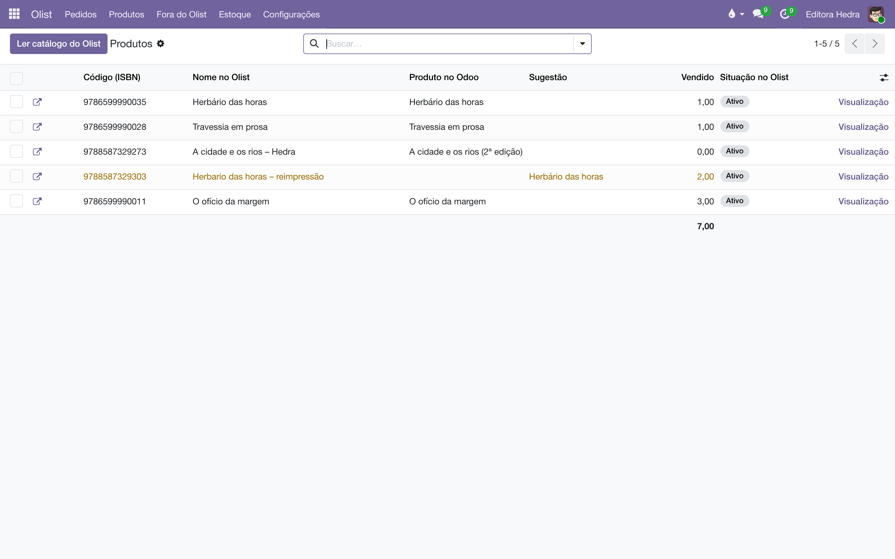
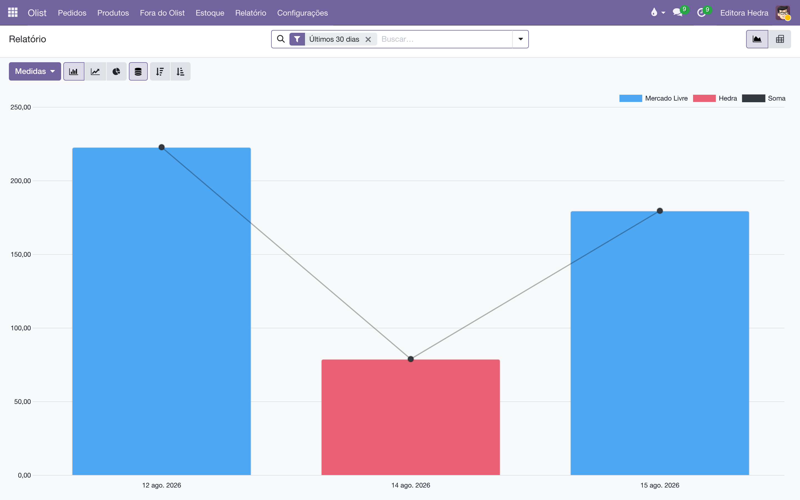

O Olist é um serviço pago e fechado — e o Liber conversa com ele assim mesmo. A venda do Mercado Livre desce com canal, cliente e nota fiscal; o estoque da prateleira sobe; e o livro-razão continua sendo o seu. O Olist é um adaptador: se um dia sair, a integração sai com ele e os seus dados ficam.
É uma conta por empresa: cada selo com a sua conta Olist, cada conta apontando para uma empresa do sistema. E a cerca vale nos dois sentidos — quem é de uma empresa só vê a conta, o catálogo e os pedidos dela; o Olist do selo vizinho nem aparece.
Em , cada livro mostra três números: o saldo que o Olist oferece, o estoque do armazém aqui, e o que seria enviado — o armazém, menos o que está reservado por entregas abertas (o pacote que espera coleta ainda conta no armazém, mas tem dono), menos a margem de segurança. A lista ordena pela divergência — o trabalho começa por onde a diferença é maior.
| Situação | O que significa |
|---|---|
| Olist oferece a mais | O marketplace vende o que você não tem — risco de pedido cancelado. |
| Olist oferece a menos | Você tem e não está vendendo lá. |
| Igual | Nada a fazer. |
| Sem produto no Odoo | O livro existe lá e não foi casado aqui — ver a tela de Produtos. |

O número que sobe é o estoque do armazém, não o "Em mãos" — o que já está numa caixa fechada com etiqueta de outro cliente não se oferece num marketplace. E a Margem de segurança da conta desconta os últimos exemplares: a contagem erra, e vender o último de um número talvez errado é o que vira cancelamento.
Em mora o espelho do catálogo de lá: nome, preço, ISBN e a ficha completa. O casamento com o seu catálogo é por ISBN e acontece sozinho. O que não casa — reedição com ISBN novo de um lado e cadastro antigo do outro é o caso comum — se resolve nesta tela:
| Recurso | Para quê |
|---|---|
| Sugestão | Um candidato achado pelo título. É sugestão: quem decide é gente, porque há livro homônimo de editora diferente. |
| Casar à mão | Apontar o produto certo na linha. O casamento manual é protegido — a releitura do catálogo não o desfaz. |
| Vendido | Quanto aquele livro vendeu no Olist. É a régua para decidir onde gastar o olho: livro que nunca vendeu pode esperar. |
| Ficha editável | Corrigir o cadastro de lá daqui: preço, ISBN, situação. Editar muda só o espelho — o Olist só sabe quando você usa Enviar alterações, e a tela mostra o de/para do que está pendente. |

O caminho inverso também existe: lista os livros do seu catálogo que ainda não estão à venda lá.
O Olist diz de onde veio cada pedido — "Mercado Livre", o nome da loja própria. Esse nome é deles; o canal de venda que os seus relatórios usam é seu. Em , cada nome descoberto nos pedidos aparece como uma linha, e a casa escolhe a qual canal de venda ele corresponde. A linha amarela é a que falta mapear — pedido que chega por ela entra sem canal até alguém decidir.

Em (logo antes das Configurações), as vendas viram gráfico: uma barra por dia, empilhada por canal, nos últimos 30 dias — cancelados fora. Ele nasce das linhas dos pedidos, então mede as duas coisas que importam — Quantidade (exemplares) e Valor (mercadoria, sem o frete) — e agrupa por livro: o botão Medidas troca a régua, e o pivô mostra as duas lado a lado, cruzadas por dia, canal ou título.

Em , a lista traz os pedidos de lá com situação, valor e rastreio. O canal e os itens vêm num segundo passo — Ler detalhe — porque custam uma consulta por pedido; o agendamento faz isso aos poucos, e a conta mostra a cobertura ("47 de 978 lidos").
O filtro A despachar é o grito da operação — e a régua dele é da casa, não do Olist. Quando a etiqueta nasce, o Olist marca "Enviado" e entrega o PDF: o pacote continua na sua prateleira até a coleta, e só quem sabe disso é quem embala. Por isso a linha só sai do filtro quando o funcionário valida a entrega no Odoo (ou quando o Olist prova que saiu: "Entregue").
O fluxo do pacote, de ponta a ponta: a importação confirma a venda e a entrega nasce em Pronto, na caixa de despacho própria do depósito — o tipo de operação Marketplaces (série MP/OUT/), que nasce sozinho no primeiro pedido e vira um cartão só dele na visão geral do . O pacote de pessoa física é outro trabalho — pequeno, um livro, a etiqueta do Olist — e não se mistura ao palete da Amazon nem à remessa da livraria. A entrega já chega com o XML da nota no clipe e a impressão no menu. Embalou e a coleta levou? Validar é o clique que registra a saída e baixa a prateleira. Se alguém esquecer, o sistema se corrige sozinho quando o pedido virar "Entregue" no Olist. E o estoque oferecido ao marketplace desconta o que está reservado: o pacote que espera coleta ainda conta no armazém, mas tem dono. (Na lista geral de entregas, o filtro Do Olist também os acha.)
Importar para o Odoo é o ato que traz o pedido para dentro, por linhas escolhidas — e ele traz a nota junto: a fatura nasce do XML que a SEFAZ autorizou, não do que o pedido diz. Quando os dois divergem (frete, desconto), a diferença fica à vista em vez de silenciosa.
| Situação do pedido | O que fazer |
|---|---|
| Falta ler o detalhe | Nada — o agendamento chega lá; ou selecione e Ler detalhe. |
| A importar | Pronto para importar, se todos os livros estiverem casados — é a fila do operador, e o filtro padrão da tela mostra só ela. |
| Anterior ao corte | Mais antigo que a data de "Operar pedidos a partir de": é história para consolidação, não fila de trabalho — sai do "A importar" e fica esmaecido. Importar continua possível, selecionando e clicando; entra como registro, e a fatura, se quiser, é decisão sua no Gerar fatura. |
| Livros não localizados > 0 | Um item não tem produto casado. O pedido inteiro espera — entrar com menos livros do que teve deixaria o número errado para sempre. Case o livro na tela de Produtos e importe. |
| Cancelado no Olist | Nada: cancelado não é pendência e sai da fila sozinho. |


Duas escolhas da conta governam o efeito do pedido importado:
| Campo | O que decide |
|---|---|
| Operar pedidos a partir de | A data em que o marketplace passa a produzir efeito: do corte em diante o pedido confirma, fatura e cria a entrega na fila de embalagem (a prateleira baixa quando o funcionário valida — ou sozinha, se o Olist já disser "Entregue"); antes dele, entra só como registro. Vazio, nenhum pedido mexe em nada — importar o histórico não pode reescrever o estoque de hoje. |
| Diário do recebimento | Onde lançar o valor que o comprador já pagou ao Olist. Use um diário próprio do marketplace, nunca a conta bancária: o dinheiro só chega no repasse, e é a conciliação desse diário que revela as taxas. Vazio, o título fica em aberto. |
| O que aparece | Por quê | O que fazer |
|---|---|---|
| "A conta está em somente leitura" | A trava da conta está ligada — e vem ligada de fábrica. | Se a intenção era escrever mesmo, desligue Somente leitura na ficha da conta. É uma decisão, não um defeito. |
| Um livro aparece duas vezes na comparação | Duas entradas do Olist casadas no mesmo produto (capa cinza e capa vinho). | O envio recusa até alguém decidir como dividir o saldo — a linha fica marcada. |
| "Vendido: 0" num livro que você sabe que vende | Os pedidos daquele livro ainda não tiveram o detalhe lido. | Confira a cobertura na conta; enquanto não for 100%, o número é um piso. |
| A leitura para no meio com aviso de limite | A cota de chamadas da conta Olist esgotou por ora. | Nada a fazer: o sistema recua e insiste sozinho, no ritmo que a conta aceita. |
| Um pedido que você espera não aparece no "A despachar" | Ou ele ainda não tem nota (sem nota não há o que embalar), ou é anterior ao corte (história), ou a entrega dele já foi validada — e aí está tudo certo. | Confira a coluna "Situação do XML" e a situação do pedido; nota emitida e entrega aberta é o único par que grita. |
| Pedido importado sem canal de venda | O canal do Olist ainda não foi mapeado. | Mapeie em — os pedidos já lidos recebem o canal em seguida. |
Todo documento do sistema carrega um prefixo na numeração — CO/2026/00001 é um acerto, AT/2026/00042 é um chamado. A lista é a mesma em todos os manuais:
| Prefixo | O que é |
|---|---|
C | Pedido de consignação: o pedido que põe livros na prateleira do cliente — C00001, no lugar do S da venda comum. |
CO/ | Consignação, o documento do acerto: registra o que o cliente vendeu e vira venda — CO/2026/00001. |
CR/ | Retorno de consignação: o documento que pede a devolução dos exemplares da prateleira — CR/2026/00001. |
CA | Auditoria de consignação: reconstrói o saldo da prateleira do cliente pelas notas fiscais e registra o ajuste — CA00001. |
CP/ | Campanha de consignação: o sortimento-alvo por canal — quantos exemplares de cada título as prateleiras devem ter — CP/2026/0001. |
AC/ | Acordo de Consignação: o contrato com a livraria, dono da prateleira — AC/2026/00001. |
COM/OUT/ | A série da remessa de consignação ao cliente, do armazém à livraria — COM/OUT/2026/00001, no espelho do WH/OUT. |
MP/OUT/ | A série das entregas de marketplace (Olist): o pacote de pessoa física, na caixa de despacho própria do depósito — MP/OUT/2026/00001. |
COM/MOV/ | A série dos fluxos internos de prateleira da consignação — COM/MOV/2026/00001. |
COM/IN/ | A série do retorno de consignação, da prateleira ao armazém — COM/IN/2026/00001, no espelho do WH/IN. |
REM/ | Remessa: a nota de simples remessa, sem cobrança — a numeração vem do diário fiscal REM. |
COL/ | Coleta: o lote do pedido de coleta às transportadoras — COL/2026/00001. |
AT/ | Atendimento: o chamado nascido do e-mail comercial — AT/2026/00001. |
MBX/ | O lote de envio de metadados à Metabooks — MBX/2026/00001. |
Impostos de Direitos Autorais/ | O lote da fatura acumuladora do IRRF retido dos autores no mês. |
Royalties entre Empresas/ | O lote da fatura acumuladora de royalties entre as empresas da casa. |
| Do próprio Odoo | |
S | Pedido de venda comum — S00001; o pedido de consignação usa o C no lugar. |
WH/OUT | Entrega comum do armazém: a transferência de saída padrão do Odoo. |
WH/IN | Recebimento do armazém: a transferência de entrada padrão do Odoo. |
Bases antigas guardam transferências nas séries COM/ e RET/, de antes da separação por direção — o histórico não é renumerado.
Manual completo, com busca e as demais páginas: Marketplaces via Olist.